ASL2
Basis Expansions and Regularization¶
之前讨论的都是(广义上的)线性模型
(Generalized) Linear Models
- Linear regression
- Linear discriminant analysis
- Logistic regression
- Separating hyperplanes
Extremely unlikely that f(x) is linear
- Linear model is usually a convenient and sometimes necessary approximation
- Easy to interpret, first order Taylor expansion, avoid overfitting
A Taylor series expansion of a function f(x) about a point a f(x)=f(a)+f^{\prime}(a)(x-a)+\frac{f^{\prime \prime}(a)}{2 !}(x-a)^{2}+\frac{f^{(3)}(a)}{3 !}(x-a)^{3}+\ldots+\frac{f^{(n)}(a)}{n !}(x-a)^{n}+\ldots
Intro¶
Moving Beyond Linearity¶
Augment inputs X with transformations, then use linear models in the new space
- The m_{t h} transformation, h_{m}(X): \mathbb{R}^{p} \rightarrow \mathbb{R}
The new approximated function: f(X)=\sum_{m=1}^{M} \beta_{m} h_{m}(X), m=1, \ldots, M
Once basis functions h_{m}(X) have been determined, model estimation proceeds as in ordinary linear regression.
Some simple and widely used h_{m}(X)
- h_{m}(X)=X_{m}, the original input variables
- h_{m}(X)=X_{j}^{2} or X_{j} X_{k}, O\left(p^{d}\right) terms for degree-d polynomial)
- h_{m}(X)=\log \left(X_{j}\right), \sqrt{X_{j}},\|X\|, \ldots
- h_{m}(X)=I\left(L_{m} \leqslant X_{k} \leqslant U_{m}\right), indicator for region of X_{k} 分段
Controlling for Model Complexity¶
我们需要一种方式来控制我们模型（从字典中选择基函数）的复杂度, 三种方式
Restriction methods: limit the class of functions before-hand
- f(x)=\sum_{j=1}^{p} f_{j}\left(X_{j}\right)=\sum_{j=1}^{p} \sum_{m=1}^{M_{j}} \beta_{j m} h_{j m}\left(X_{j}\right)
- limit the number of basis functions M_{j} used for each component function f_{j}.
Selection methods: include basis that improve model fit significantly
- Variable selection
- Stagewise greedy approaches, CART, MARS and boosting
Regularization methods: use the entire dictionary but restrict the coefficients
- Ridge
- LASSO
Piecewise Polynomials and Splines¶
Piecewise Polynomials - Assume 1-dim¶
A piecewise polynomial function 分段多项式 f(X) is obtained by dividing the domain of X into contiguous intervals, and representing f by a separate polynomial in each interval.
Piecewise constant h_{1}(X)=I\left(X<\xi_{1}\right), h_{2}(X)=I\left(\xi_{1} \leqslant X<\xi_{2}\right), h_{3}(X)=I\left(\xi_{2} \leqslant X\right)
Piecewise linear h_{4}(X)=I\left(X<\xi_{1}\right) X, h_{5}(X)=I\left(\xi_{1} \leqslant X<\xi_{2}\right) X, h_{6}(X)=I\left(\xi_{2} \leqslant X\right) X
Continuous piecewise linear h_{1}(X)=1, h_{2}(X)=X, h_{3}(X)=\left(X-\xi_{1}\right)_{+} h_{4}(X)=\left(X-\xi_{2}\right)_{+},
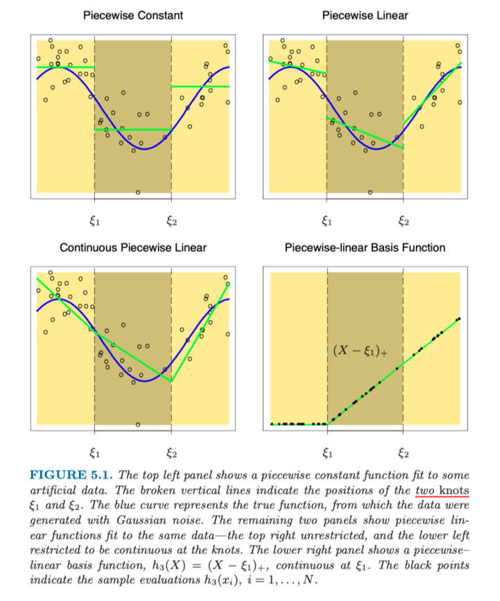
采用不同基函数和约束条件的回归结果.
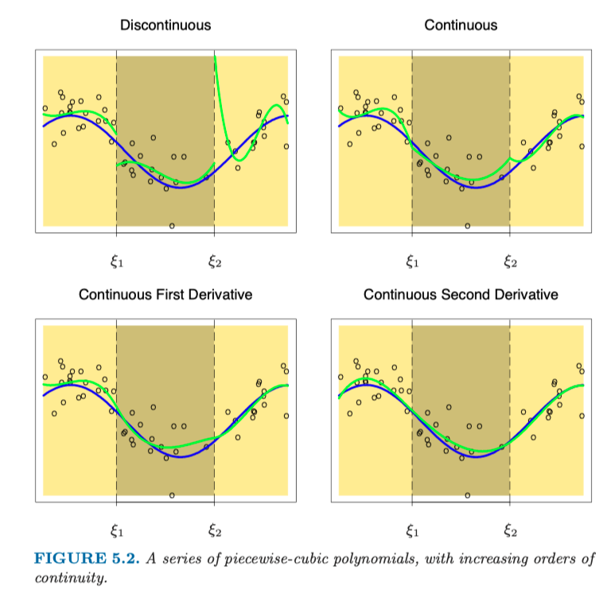
Piecewise Cubic Polynomial¶
Cubic spline 三次样条: piecewise cubic polynomial with continuous first and second derivatives at the knots.这里是三次样条的定义, 注意到这里是要求了到二阶微分的连续性; 而下面的给出了一组基函数, 这里是需要证明的. 参见 here. 注意: 1. 这里的六个函数是线性无关的; 2. 满足三次样条的约束, 即knot处0-2阶微分连续.
Basis for cubic splines
Total number of parameters: 3 \times 4-2 \times 3=6 计算参数的个数：这里有三个区域，每个区域拟合一个三次函数，因此是 3*4=12 个参数；约束条件有两个 knots，每个节点上有三个约束（0-2阶连续）。[另外可知, 如果再加三阶微分连续, 此时的自由度变为 4, 和全局的三次函数一样, 也即「Enforcing one more order of continuity would lead to a global cubic polynomial.」]
- Cubic splines are the lowest-order spline for which the knot-discontinuity is not visible to the human eye. 据说三次样条是人眼看不出结点不连续的最低阶样条．
Order-M Spline¶
定义更一般的样条order：order 为 M 的样条是 order 为 M 的分段多 项式，而且有连续的 M − 2 次微分．[注意这里的 order = degree+1, degree 才是我们熟悉的阶数, 例如这里的三次样条 order=4]
- 三次样条的 M = 4
- 分段常数函数是 order 为 1 的样条
- 连续的分段线性函数是 order 为 2 的样条
Order-M spline with knots \xi_{j}, j=1, \ldots, K :
- Piecewise-polynomial of order M
- Continuous derivatives up to order M-2
可以给出 M order 样条的基函数:
Truncated power 截断幂 basis
- h_{j}(X)=X^{j-1}, j=1, \ldots, M
- h_{M+l}=\left(X-\xi_{l}\right)_{+}^{M-1}, l=1, \ldots, K
In practice, the most widely used orders are M=1,2 and 4 .
Construct Spline Basis¶
注意到 order 为 M ，含有 K 个结点的样条其自由度为
左边第一项表示 K+1 个区域中每个区域需要 M 个参数，而第二项表明 K 个结点中需要 M-1 个限制. 比如，对于三次样条， M=4 ，则自由度为 K+4.
下面介绍利用 R splines 中的函数来进行 Spline 的 order, knot 的数量和位置的选择. Choose order of the spline, the number of knots and their placement. [注意, 在下面的 bs(x, df=7) 中，原本四个结点的三次样条自由度为 8 ，但是 bs() 函数本身默认在基中去掉常数项. 也即, 这里满足 df = degree + len(knots); df=freedom-1; degree=M-1]
bs(x, df=7)- Default order M=4 cubic spline (也即 degree=3)
- 7-3=4 interior knots at the 20_{t h}, 40_{t h}, 60_{t h}, 80_{t h} percentiles of X
- Return a N \times 8 matrix of —— 注意, 返回的矩阵还是根据自由度作为宽的
bs (x, degree=1, knots=c(0.2,0.4,0.6))- Piecewise constant
- return \mathrm{N} \times 4 matrix
Problems with polynomials and splines¶
- Poor fit near boundaries
- Extrapolation beyond boundaries 外推
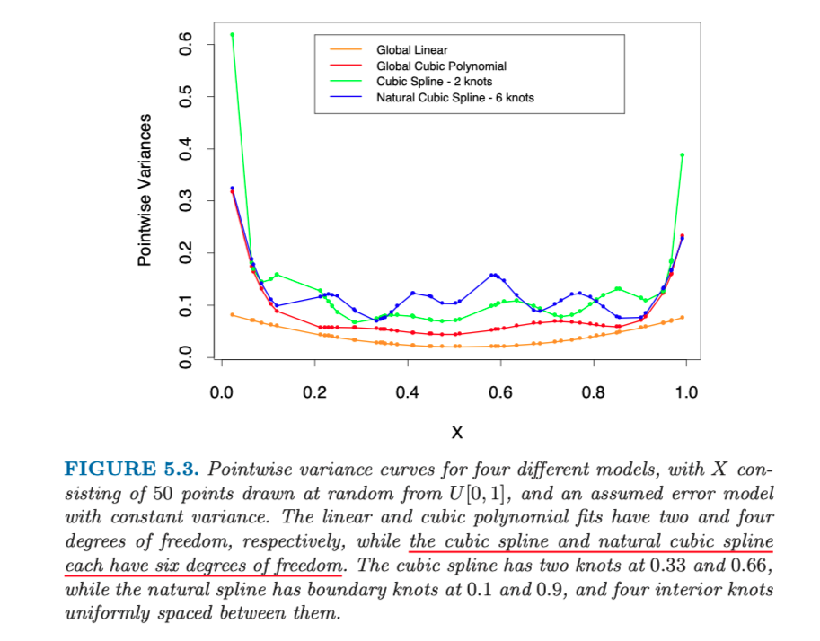
Natural Cubic Splines¶
Natural cubic spline 增加了约束: 要求在边界之外的函数要是线性的, 因此减少了2*2 个参数
- Assume function is linear beyond the boundary knots
- Frees up 2 \times 2 degrees of freedom
Natural cubic spline with \mathrm{K} knots - \mathrm{K} basis functions
- N_{1}(X)=1, N_{2}(X)=X, N_{k+2}(X)=d_{k}(X)-d_{K-1}(X)
- d_{k}(X)=\frac{\left(X-\xi_{k}\right)_{+}^{3}-\left(X-\xi_{K}\right)_{+}^{3}}{\xi_{K}-\xi_{k}}
- Easy to prove: zero second and third derivatives when X \geqslant \xi_{K} or X \leqslant \xi_{1}
这里使用过之前的三次样条的幂基函数推出来的, 参见 here.
自由度的计算说明¶
下面说明对于自然三次样条而言, 基函数个数即为结点个数. 设有 K 个结点, 则有 K-2 个内结点, (K-2+1) 个区域, 每个区域参数为 4 个, 每个内结点减掉 3 个参数, 每个边界点减掉一个参数, 则还剩下
也就是个基函数.
具体地, 假设某内结点 \xi 的左右区域函数分别为
则自由参数有 8 个 \left(a_{i}, b_{i}, c_{i}, d_{i}\right), i=1,2, 结点 \xi 处需要满足 “函数值相等”、“阶导相等”、“阶导相等”, 即
相当于减少了 3 个自由参数（换句话说, 有三个参数可以被其他 5 个参数表示出来）。
对于某边界点 \xi_{0}, 其所在区域的函数为 f(x)=a x^{3}+b x^{2}+c x+d, 边界点需要满足 “二阶导为零”的约束, 即
这减少了 1 个自由参数。
Example: South African Heart Disease (Continued)¶
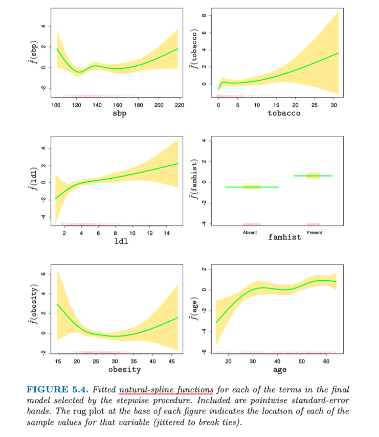
Smoothing Splines¶
这里我们讨论使用最大结点集合的样条基方法来彻底避免结点选择的问题．拟合的复杂度由正则化来控制．
With regression splines, choosing knots is a tricky business. 上面讲的「回归样条」, 这里是光滑样条.
Smoothing Splines
- avoid knot selection problem by using a maximal set of knots
- control for overfitting by shrinking the coefficients of the estimated function
Smoothing splines can be motivated directly by 1 . natural cubic splines with knots at \left(x_{1}, x_{2}, \ldots, x_{n}\right) and regularization on parameters or 2. a function minimization perspective. We’ll talk about 2 in accordance with the text.
Among all functions f(x) with two continuous derivatives, find one that minimizes the penalized residual sum of squares
- the first term quantifies the goodness-of-fit to the data
- the second term measures the roughness (curvature in f )
- \lambda : smoothing parameter
Special case
- \lambda=0: f can be any function that interpolates the data.
- \lambda=\infty: f is simple least squares line
With \lambda \in(0, \infty), there exists a unique minimizer - a natural cubic spline with knots at the unique values of the x_{i}, i=1, \ldots, N. 这里的 f 是任意的, 因此是无限维空间; 然而可以证明, 在上面的二阶微分惩罚项下, 存在一个在有限维的唯一最小点, 是一个结点在不重复的 x_i, i=1,2,...,N 处的自然三次样条. 相关证明见 here
THEOREM : Let g be any differentiable function on [a, b] for which g\left(x_{i}\right)=z_{i} for i=1, \ldots, n. Suppose n \geqslant 2, and that \tilde{g} is the natural cubic spline interpolant to the values z_{1}, \ldots, z_{n} at points x_{1}, \ldots, x_{n} with a<x_{1}<<x_{n}<b. Then \int\left(g^{\prime \prime}\right)^{2} \geqslant \int\left(\tilde{g}^{\prime \prime}\right)^{2} with equality only if \tilde{g}=g
因此, 可以基于这一结论进行进一步的推导
Since now f(x) is a natural cubic spline, f(x)=\sum_{j=1}^{N} N_{j}(x) \theta_{j} The penalized RSS reduces to:
- N is n \times n, with N_{i j}=N_{j}\left(X_{i}\right)
- \Omega is n \times n, with \Omega_{N_{i j}}=\int N_{i}^{\prime \prime}(t) N_{j}^{\prime \prime}(t) d t
因此 [是广义岭回归]
- The solution: \hat{\theta}=\left(N^{\top} N+\lambda \Omega_{N}\right)^{-1} N^{\top} y
- The fitted: \hat{y}=N \hat{\theta}=N\left(N^{\top} N+\lambda \Omega_{N}\right)^{-1} N^{\top} y=S_{\lambda} y
- S_{\lambda}: smoother matrix
Pre-specify the Amount of Smoothing¶
我们还没有指出光滑样条的 λ 是怎么选取的．本章的后面我们描述使用自动化方 法，比如交叉验证．在这部分中我们讨论预先确定光滑总量的直观方式．
Assume \lambda is fixed, smoothing spline operates through linear operator
- fits are linear in y 也即, 线性光滑 (linear smoother) 和线性回归一样
- smoother matrix S_{\lambda} depends on X and \lambda
Compare hat matrix H and smoother matrix S_{\lambda}
- symmetric, positive semidefinite?
- idempotent?
- rank?
Smoother Matrix¶
上面的平滑矩阵 S_{\lambda} = N\left(N^{\top} N+\lambda \Omega_{N}\right)^{-1} N^{\top} 可以写成以下形式, 参见 here ; 这样可以分离出超参数 \lambda, 从而进行奇异值分解
- Re-write S_{\lambda} in the Reinsch form
- K=N^{-\top} \Omega_{N} N^{-1}, does not depend on \lambda
- K : penalty matrix since P R S S=(y-f)^{\top}(y-f)+\lambda f^{\top} K f
- Eigen decomposition of S_{\lambda}
- Eigenvalue \rho_{k}(\lambda)=\frac{1}{1+\lambda d_{k}}
- Eigenvector \mu_{k}
Note: \mu_{k} are also the eigenvector of K, and d_{k} are the eigenvalue of K
Effective degree of freedom d f_{\lambda}=\operatorname{tr}\left(S_{\lambda}\right)
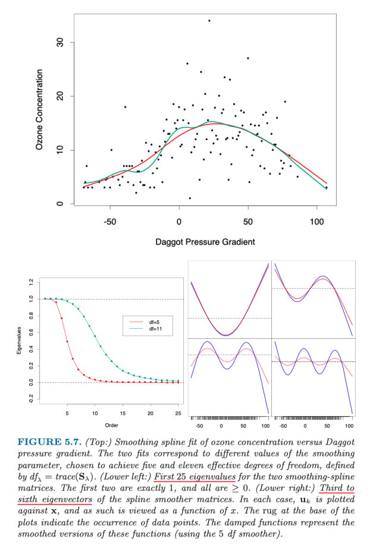
Highlights of Eigen Representation¶
- The eigenvectors are not affected by \lambda 奇异向量与超参无关
- S_{\lambda} y=\sum_{k=1}^{N} \mu_{k} \rho_{k}(\lambda)\left\langle\mu_{k}^{\top} y\right\rangle, compare to regression spline with M basis? 可以看到, 这里是通对 y 关于基 \mu_k 进行了分解, 通过 \rho_{k}(\lambda) 控制了收缩的大小; 这就和上一节中的「回归样条」不一样, 在回归样条中, 组分要么不变要么收缩为 0. —— ．基于这个原因光滑样条 被称作收缩 (shrinking)光滑器，而回归样条被称作投影 (projection) 光滑器.
- d_{1}=d_{2}=0, thus \rho_{1}(\lambda)=\rho_{2}(\lambda)=1, linear functions are never shrunk
- The eigenvectors have increasing complexity, and the higher the complexity, the more they are shrunk
- Reparametrize RSS with new basis \mu_{k}, R S S=\|y-U \theta\|+\lambda \theta^{\top} D \theta, thoughts? 其中 U 列向量为 u_k ，且 D 为元素为 d_k 的对角矩阵．
- d f_{\lambda}=\operatorname{tr}\left(S_{\lambda}\right)=\sum_{k=1}^{N} \rho_{k}(\lambda), compare to regression splines? 在投影光滑器中, 所有的特征值为 1.
Choosing \lambda¶
see here
Crucial and tricky…
- Fixing the Degrees of Freedom 可以直接认为指定
- d f_{\lambda}=\operatorname{tr}\left(S_{\lambda}\right) is monotone in \lambda for smoothing splines
- R 中可以采用
smooth.spline(x, y, df=6)确定光滑程度 - Cross validation
- \operatorname{EPE}\left(\hat{f}_{\lambda}\right)=\sigma^{2}+\operatorname{Var}\left(\hat{f}_{\lambda}\right)+\operatorname{Bias}(\hat{f}(\lambda))^{2}
- K-fold cross-validation
- seek a good compromise between bias and variance
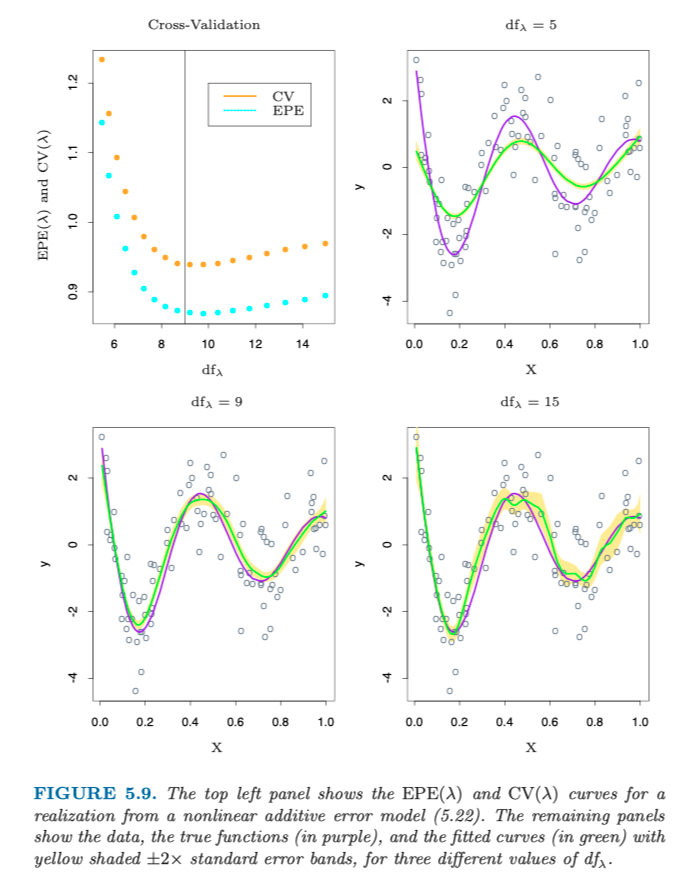
Nonparametric Logistic Regression¶
see here
Logistic regression with single quantitative input X
- Fitting f(x) in a smooth fashion leads to a smooth estimate of the conditional probability \operatorname{Pr}(Y=1 \mid x)
这是之前的似然函数. The likelihood function, where \operatorname{Pr}(Y=1 \mid X=x)=p\left(x_{i}\right)
since p\left(x_{i}\right)=\frac{e^{f\left(x_{i}\right)}}{\left.1+e^{f\left(x_{i}\right)}\right)},
Penalized log-likelihood¶
利用光滑化的思想, 加上惩罚项
Optimal f is a finite-dimensional natural spline with knots at the unique values of x.
Represent f(x)=\sum_{j=1}^{N} N_{j}(x) \theta_{j}
- \frac{\partial l(\theta)}{\partial \theta}=N^{\top}(y-p)-\lambda \Omega \theta
- \frac{\partial^{2} /(\theta)}{\partial \theta \partial \theta^{\top}}=-N^{\top} W N-\lambda \Omega
Newton-Raphson update
这里的更新公式的形式很有指导意义．它试图用任何非参（加权）回归算子代替 S_{\lambda, W}，并且得到一般的非参逻辑斯蒂回归模型的族．尽管这里 x 是一维的，但这个过程可以很自然地推广到高维的 x．这些拓展是 广义可加模型 (generalized additive models) 的核心，我们将在第 9 章中讨论．
Multidimensional Splines¶
From 1-dim to 2-dim¶
Suppose X \in \mathbb{R}^{2}
- h_{1 j}\left(X_{1}\right), j=1, \ldots, M_{1} are the basis for coordinate X_{1}
- h_{2 k}\left(X_{2}\right), k=1, \ldots, M_{2} are the basis for coordinate X_{2}
- g_{j k}(X)=h_{1 j}\left(X_{1}\right) h_{2 k}\left(X_{2}\right) are the M_{1} \times M_{2}-dim tensor product basis 张量积基底
The new basis representation of the model
Note, the dimension of the basis grows exponentially fast - curse of dimensionality.
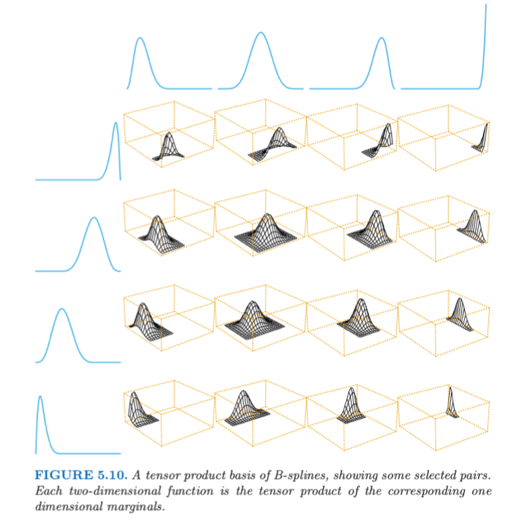
而对于一维光滑样条(正则化) 也可以推广. The 1-dim penalty
Natural generalization to 2-dim
The solution is a smooth two-dimensional surface - thin plate spline
- \lambda \rightarrow 0, f \rightarrow interpolating function
- \lambda \rightarrow \infty, f \rightarrow least square plane
- For \lambda \in(0, \infty), 解可以表示成基函数的线性展开，其中系数可以通过广 义的岭回归得到．
- solution has the form f(x)=\beta_{0}+\beta^{\top} x+\sum_{j=1}^{N} \alpha_{j} h_{j}(x)
- h_{j}(x)=\left\|x-x_{j}\right\|^{2} \log \left\|x-x_{j}\right\|, radial basis function 径向基函数
d-dim¶
More generally, when X \in \mathbb{R}^{d}
Restricted class of multidimensional splines
- f is additive
- additive penalty on each of the component functions
Kernel Smoothing Methods¶
这章中我们描述一类回归技巧, 这类技巧能够通过某种方式实现在定义域 \mathbb{R}^{p} 中估计回归函数 f(X) 的灵活性, 这种方式是在每个查询点 x_{0} 处分别拟合不同但简单的模型. 仅仅使用离目标点 很近的观测点来拟合这个简单的模型, 这种方式得到的估计函数 \hat{f}(X) 在 \mathbb{R}^{p} 是光滑的. 这个局 部化可以通过一个加权的函数或者 核 (kernel) 函数 K_{\lambda}\left(x_{0}, x_{i}\right) 来实现, 核函数是基于 x_{i} 到 x_{0} 的 距离赋予一个权重. 核 K_{\lambda} 一般地通过参数 \lambda 来编号, 参数 \lambda 规定了邻域的宽度. 原则上, 这些 基于记忆性 (memory-based) 的方法需要很少或者不需要训练; 所有的工作在 赋值 (evaluation) 阶 段便完成了. 根据训练集唯一需要确定的参数是 \lambda. 然而, 该模型是整个训练数据集.
我们也讨论更加一般类别的基于核的技巧, 它们与其他章节中结构化的方法联系在一起了, 这在密度估计和分类中很有用.
本章中的技巧不应该与最近使用最多的“核方法”混淆. 这章中, 核大多作为局部化的工具. 我们在 5.8 节, 14.5 .4 节, 18.5 节和第 12 章讨论核方法; 在这些部分, 核在一个高维的（隐式的）特征 空间中计算内积, 而且被用于正规化非线性建模中。我们将在本章的 6.7 节的最后将这些方法联系 起来.
1-Dim Kernel Smoother¶
用KNN来显示最直观. 左图是直接用KNN的结果, 可见拟合的函数是非连续的; 右图展示了采用 Epanechnikov quadratic kernel 的平滑结果.
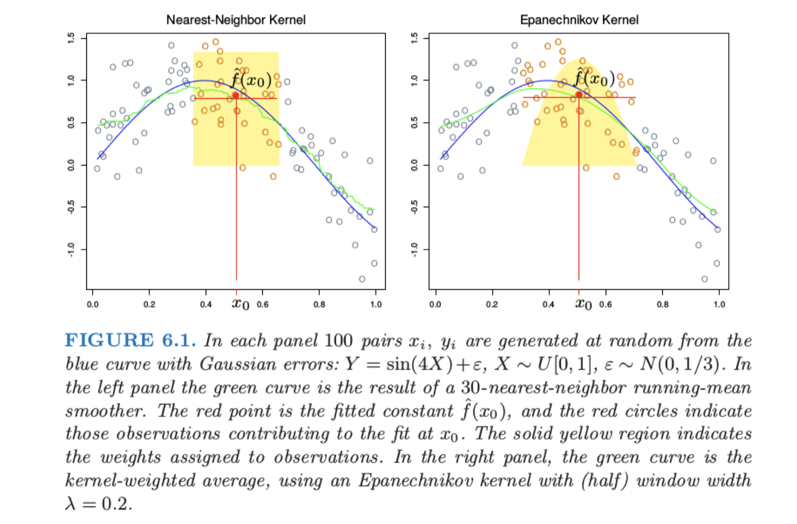
Kernel weighted avarage:
with the Epanechnikov quadratic kernel
with
Kernel Weighted - Varying Metric Window Size¶
The previous Epanechnikov kernel weighted average
- constant metric window size \lambda=0.2
- does not change while x_{0} moves
- KNN adapts to the local density of x_{i}
Kernel with adaptive neighborhood
- For KNN, h_{k}\left(x_{0}\right)=\left|x_{0}-x_{[k]}\right|
- where x_{[k]} is the k_{t h} closest x_{i} to x_{0}
- Boundary issues with metric neighbourhood and KNN
Popular Kernels for Smoothing¶
- Epanechnikov - Compact, non-differentiable at the boundary
- Tri-cube kernel - Compact, differentiable at the boudary
- Gaussian kernel - non-compact, continuously differentiable
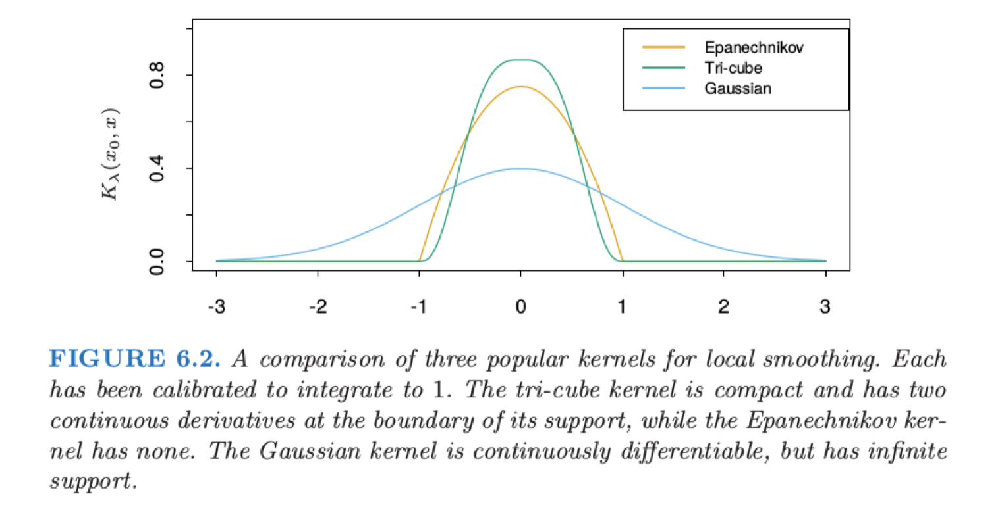
Local Linear Regression 局部线性回归¶
Boundary Problem: 上面提到的 locally weighted average 局部加权平均的方法, 在边界上会有问题
- Boundary problems occur due to asymmetry of the kernel
- Can happen in the interior region if X is not equally spaced 不仅会发生在边界上上, 还是由于核的不对称性, 其在区间内部也可能发生
解决方法: 局部加权线性回归 —— 局部加权线性回归会纠正为一阶误差.
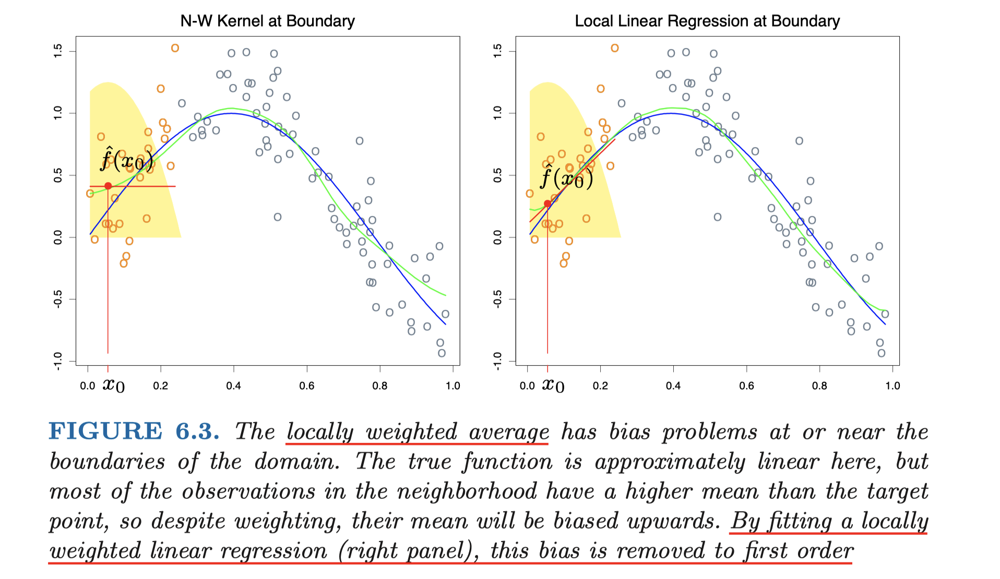
Locally weighted regression solves a weighted least squares problem at each target point x_{0}
- Design matrix B_{N \times 2}, with i_{t h} row b(x)^{\top}=\left(1, x_{i}\right)
- Weight matrix W_{N \times N}\left(x_{0}\right), with i_{t h} diagonal element K_{\lambda}\left(x_{0}, x_{i}\right)
- Estimate is linear in y
- l_{i}\left(x_{0}\right) combines the weighting kernel K_{\lambda}\left(x_{0}, \cdot\right) and least square operation, also referred to as equivalent kernel 等价核
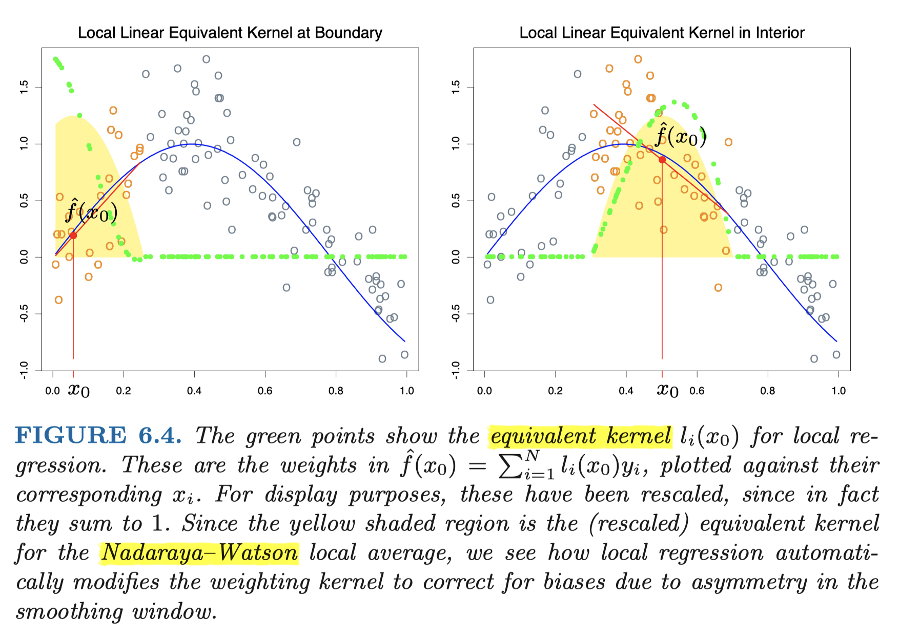
Automatic Kernel Carpentry 局部线性回归自动地修改核将偏差矫正到恰好为一阶，这是被称为 自动核作品 (automatic kernel carpentry) 的现象
Local linear regression automatically modifies the kernel to correct bias exactly to first order
It can be shown that for local linear regression (证明见 here; 但更为简单的事是观察 L^TB = b(x_0), 也即 L^T(1,x)=(1,x_0))
- \sum_{i=1}^{N} l_{i}\left(x_{0}\right)=1
- \sum_{i=1}^{N}\left(x_{i}-x_{0}\right) l_{i}\left(x_{0}\right)=0
Therefore, the bias only depends on quadratic and higher older terms
- E \hat{f}\left(x_{0}\right)-f\left(x_{0}\right)=\frac{f^{\prime \prime}(x)}{2} \sum_{i=1}^{N}\left(x_{i}-x_{0}\right)^{2} l_{i}\left(x_{0}\right)+R
- Typically small under suitable smoothness assumption
Local Polynomial Regression¶
Local linear fits bias: trimming the hills and filling the valleys
Local polynomial regression of degree-d
- Able to correct the bias in the regions of curvature
- But with increased variance (bias-variance tradeoff)
- 方差 \left\|l\left(x_{0}\right)\right\|^2 increase with d
Whether or not to choose local quadratic regression
- If interested in extrapolation (boundary) \rightarrow local linear
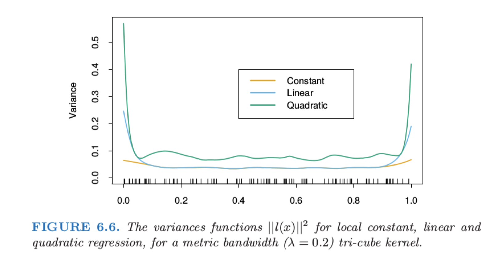
Local Regression in R^p¶
核光滑和局部回归可以非常自然地推广到二维或更高维空间中．
Convert distance based kernel to radius based kernel
- \|\cdot\| is the Euclidean norm
- Since the Euclidean norm depends on the units in each coordinate, need to standardize each x_{j}
Problems with local regression in \mathbb{R}^{p}¶
Boundary problem
- More and more points can be found on the boundary as dimension increases
- 直接修改核来适应二维边界会变得很复杂，特别是对于不规则的边界
- Local polynomial regression still helps automatically deal with boundary issues for high dimensions (but not desired)
Curse of Dimensionality
- Impossible to simultaneously maintain localness (low bias) and a sizable sample in the neighbourhood (low variance) without total sample size increasing exponentially in p
Non-visualizable
- Goal of getting a smooth fitting function is to visualize the data which is difficult in high dimensions
- 不够直观, it is quite difficult to interpret the results except at a gross level. From a data analysis perspective, conditional plots are far more useful. 这里的 conditional plots 指的就是下面的例子.
臭氧浓度～太阳辐射、温度、风速. 共有三个变量, 控制 Wind 和 Temp 的情况下进行单变量的回归.
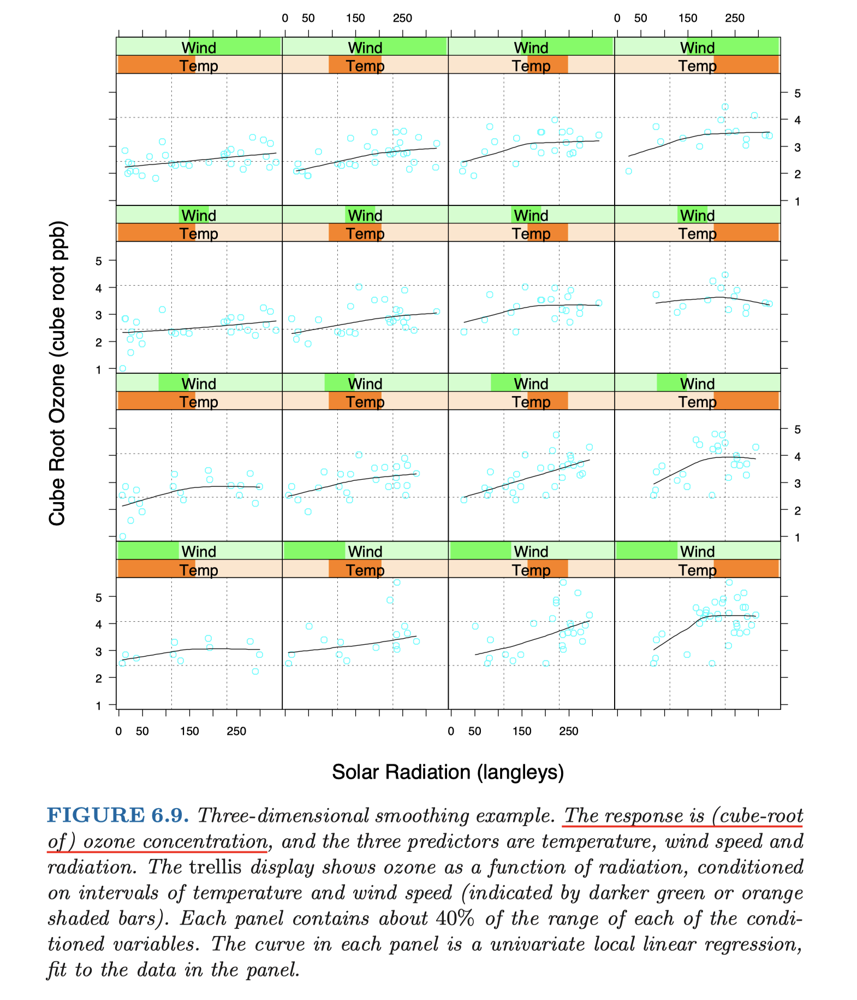
Structured Local Regression Models in R^p¶
当维度与样本大小的比率不是很好，则局部回归对我们没有太大帮助，除非我们想要对模型做出一些结构化的假设．这本书的很多部分是关于结构化回归和分类模型的．这里我们关注一些与核方法直接相关的方法．
Sperical kernel (球面核, 就是没有中间的参数矩阵 A) gives equal weight to each coordinate, while a structured kernel emphasizes weight on certain coordinates using matrix A
- A is positive semidefinite 半正定矩阵
- Entire coordinates or directions can be downgraded or omitted by imposing appropriate restrictions on A.
- A - diagonal?
- A - low rank?
- General forms of A not recommended
相较于不加限定的任意参数矩阵, 可以对 A 进行一定的限制.
Structured Regression Functions 结构回归函数¶
Suppose now we are trying to fit a regression function E(Y \mid X)=f\left(X_{1}, X_{2}, \ldots, X_{p}\right) in \mathbb{R}^{p}, in which every level of interaction is potentially present
Eliminate some higher-order terms
- Additive model (only main effects) 忽略交叉项
- Second order model (interactions up to degree 2)
Estimate low order models - Iterative backfitting algorithms 第 9 章中，我们描述了对于拟合这样低阶交叉模型的 迭代向后拟合 (iterative backfiting) 算法
- Assume all but the k_{t h} term is known
- Fit local regression of Y-\sum_{j \neq k} g_{j}\left(X_{j}\right) on X_{k}
- Repeat for each variable until convergence
Varying Coefficient Models 可变参数模型¶
Suppose X \in \mathbb{R}^{p}, divide X into \left(X_{1}, X_{2}, \ldots, X_{q}\right) with q<p and the remainder collected in vector Z
- Given Z, model is linear in X_{1}, \ldots, X_{q}
- Each coefficient \beta_{1}(Z), \ldots, \beta_{q}(Z) vary with X
Estimate varying coefficient models - locally weighted least squares 通过局部加权最小二乘拟合这个模型
例子: 主动脉半径～年龄; 相关的变量是性别和动脉距离的远近. 在可变系数模型中, 该例子的对应关系为 X - (age, gender, depth) , Y - aorta diameter, Z - (gender, depth)
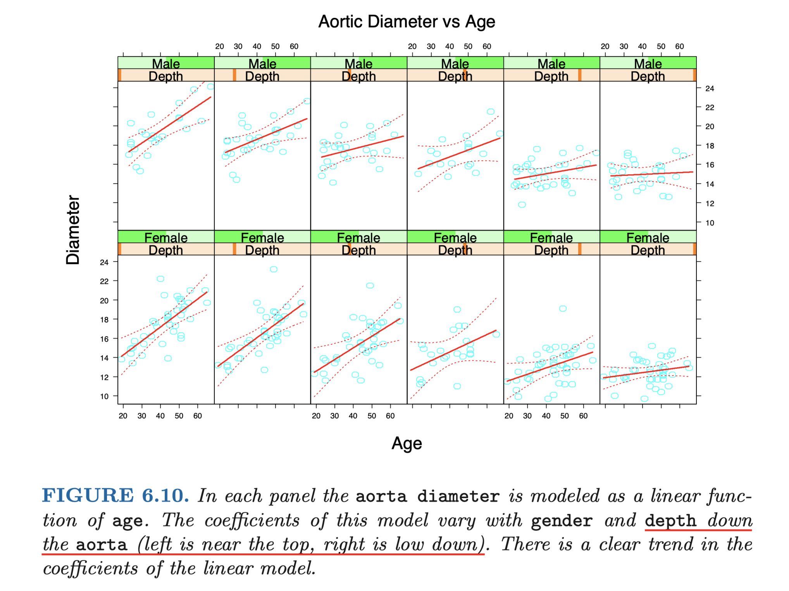
根据上面的图, 可以看到主动脉半径确实随着年龄的增长而变厚; 而从不同 depth 的设置上, 可以看到 the relationship fades with distance down the aorta(系数变小). 下面的图直接画出了系数的变化
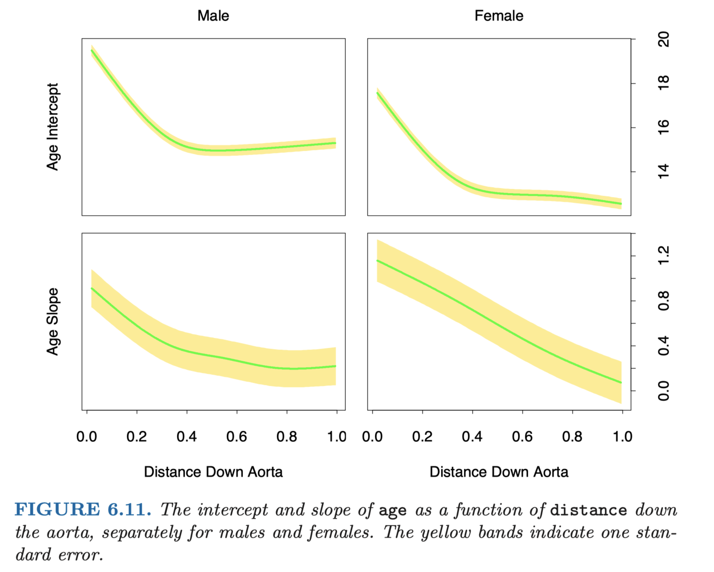
Local likelihood & Other Models¶
Local Likelihood¶
Likelihood - (generalized) linear model
Local likelihood - relax the global linear assumption to local linear
Example: Multiclass logistic regression model¶
Multiclass logistic regression model, \mathcal{G}=(1,2, \ldots, J)
The local version of multiclass logistic regression 修改为局部形式的似然函数
The fitted posterior probabilities
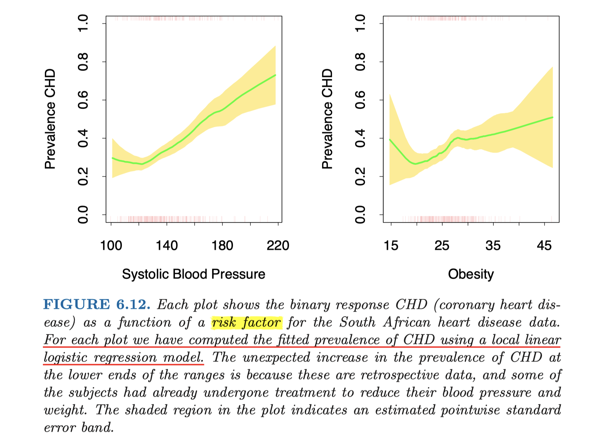
Kernel Density Estimation & Classification¶
Kernel Density Estimation¶
Empirical local estimate - bumpy $$ \hat{f}{X}\left(x $$}\right)=\frac{# x_{i} \in \mathcal{N}\left(x_{0}\right)}{N{\lambda}
- \mathcal{N}\left(x_{0}\right) - small metric neighbourhood around x_{0} of width \lambda
Parzen estimate - smooth $$ \hat{f}{X}\left(x\right) $$}\right)=\frac{1}{N{\lambda}} \sum_{i=1}^{N} K_{\lambda}\left(x_{0}, x_{i
- Counts observations with weights that decrease with distance
- Choice of K_{\lambda} : Gaussian Kernel K_{\lambda}\left(x_{0}, x\right)=\phi\left(\frac{\left|x-x_{0}\right|}{\lambda}\right)
Gaussian kernel density estimate¶
参见 https://jakevdp.github.io/blog/2013/12/01/kernel-density-estimation/
- \phi_{\lambda} denotes Gaussian density with mean 0 and standard deviation \lambda
- Convolution of the sample empirical distribution \hat{F} (jumpy) with \phi_{\lambda}( smooth )
Gaussian kernel density estimate in \mathbb{R}^{p} 在高阶空间中的自然推广 $$ \hat{f}{X}\left(x $$}\right)=\frac{1}{N\left(2 \lambda^{2} \pi\right)^{\frac{p}{2}}} \sum_{i=1}^{N} e^{-\frac{1}{2}\left(\left|x_{i}-x_{0}\right| / \lambda\right)^{2}
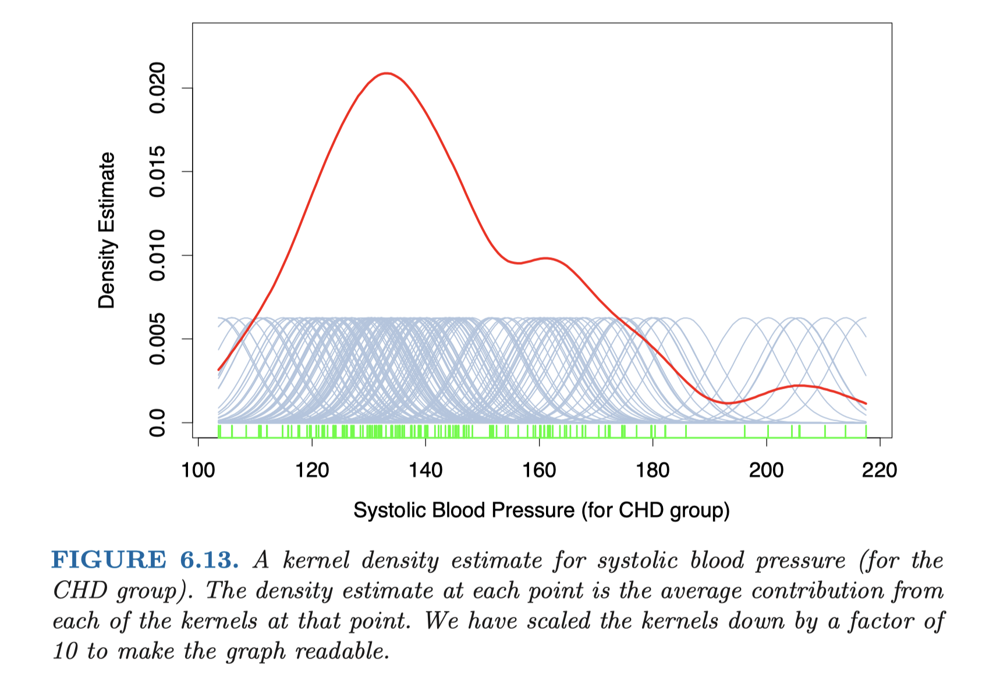
关于卷积 Convolution¶
按照卷积 [https://en.wikipedia.org/wiki/Convolution]的定义，
另外，两个独立随机变量和的分布也可以表示为卷积形式. 具体地，假设 X 和 Y 独立，分布函 数分别为 F(x)=P(X \leq x), G(y)=P(Y \leq y) ，则 X+Y 的分布函数为
Kernel Density Classification¶
For a J class problem, suppose we can fit nonparametric density estimates \hat{f}_{j}(X) separately for each class, and we also have estimates of the class priors \hat{\pi}_{j}
Then by Bayes Theorem, we can derive the class posterior probabilities
If classification is the ultimate goal
- Learning the separate class densities well may be unnecessary or misleading
- Need only estimate the posterior well near the decision boundary
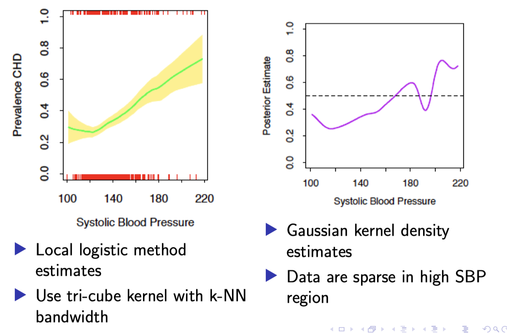
主要的差异出现在图 6.14 中右图的高 SBP 区域．这个区域中对于两个类别的数据都是稀疏的，并且因为高斯核密度估计采用度量核，所以密度估计在其他区域中效果很差（高方差）．局部逻辑斯蒂回归方法 （6.20）采用 k-NN 带宽的三次立方核；这有效地拓宽了这个区域中的核，并且利 用局部线性假设来对估计进行光滑（在逻辑斯蒂尺度上）．
Naive Bayes Classifier¶
Assumes that given class G=j, the features X_{k} are independent
- Useful when p is large, when density estimation is unattractive
- Each f_{j k} can be estimated using 1-dim kernel density estimates 用一维核密度估计单独的类别条件的边缘密度
- If X_{j} is discrete, can be estimated by appropriate histogram
- Sometimes outperform far more sophisticated models
- 这有广义加性模型的形式，更多细节将在 第 9 章描述. 参见 here
- 朴素贝叶斯和广义加性模型间的关系可以类比成线性判别分析和逻辑斯蒂回归
Radial Basis Function & Kernels 径向基函数¶
see here
- Treat the kernel function K_{\lambda}(\xi, x) as basis functions
- Each basis element is indexed by a location parameter \xi_{j} and a scale parameter \lambda_{j}
- Popular choice for D - standard Gaussian
Approaches for learning parameters \left\{\lambda_{j}, \xi_{j}, \beta_{j}\right\}
- \min_{\left\{\lambda_{j}, \xi_{j}, \beta_{j}\right\}_{1}^{M}} \sum_{i=1}^{N}\left(y_{i}-\beta_{0}-\sum_{j=1}^{M} \beta_{j} \exp \left\{-\frac{\left(x_{i}-\xi_{j}\right)^{\top}\left(x_{i}-\xi_{j}\right)}{\lambda_{j}^{2}}\right\}\right)^{2} [高斯核, 回归. 称为 RBF 网络，这是 S 型神经网络的替代选择, 参见 11章.]
- Estimate \left\{\lambda_{j}, \xi_{j}\right\} (often unsupervised) separately from \beta_{j}. 给定前者，后者的估计是简单的最小二乘问题.
Mixture Models for Density Estimation & Classification¶
Gaussian Mixture¶
- Mixing proportions \alpha_{m} with \sum_{m} \alpha_{m}=1
- Mean \mu_{m}, covariance matrix \Sigma_{m}
- Usually fit by maximum likelihood using EM algorithm
Special cases
- If \Sigma_{m}=\sigma_{m} I, f(x) has the form of a radial basis expansion 径向基 展开的形式
- If in addition \sigma_{m}=\sigma>0 is fixed and M \uparrow N, the MLE approaches the kernel density estimate where \hat{\alpha}_{m}=\frac{1}{N} and \hat{\mu}_{m}=x_{m}
混合模型同样给出了观测 i 属于组分 m 的概率的估计. Estimate of the probability that the i_{t h} observation belongs to component m $$ \hat{r}{i m}=\frac{\hat{\alpha}} \phi\left(x_{i} ; \hat{\mu{m}, \hat{\Sigma}}\right)}{\sum_{k=1}^{M} \hat{\alpha{k} \phi\left(x} ; \hat{\mu{k}, \hat{\Sigma} $$}\right)
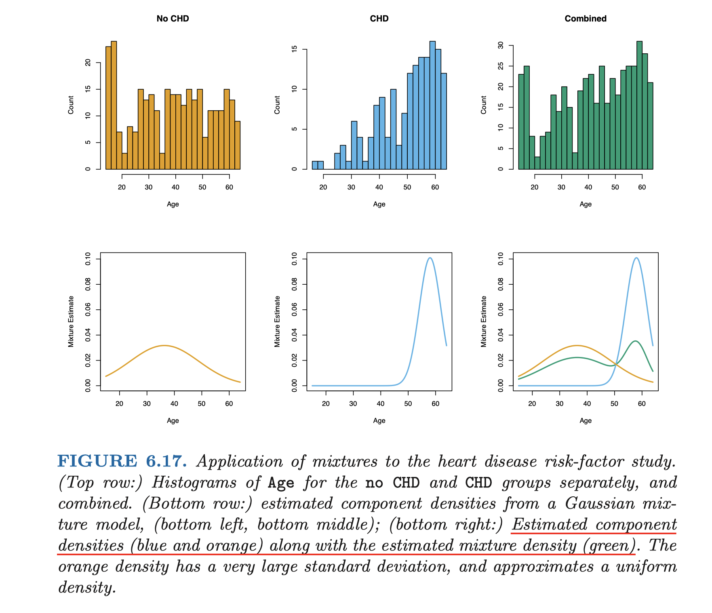
Model Assessment & Selection¶
Intro of Model Assessment & Selection¶
Regression - A Review¶
- Estimate target variable Y from a vector of inputs X.
- A prediction model \hat{f}(X) estimated from training data T=\left\{\left(x_{1}, y_{1}\right), \ldots,\left(x_{n}, y_{n}\right)\right\}
- The loss function L(Y, \hat{f}(X)) measures the error / loss between Y and \hat{f}(X)
- Common choices for loss function
Test Error
Test error, also called generalization error
- Prediction error over an independent test sample
- X and Y are drawn randomly from p(X, Y)
- The training set T is fixed
Expected Prediction Error
Expected prediction error, also called expected test error
- Average over everything that is random
- Including the randomness in the training set that produced \hat{f}
We would be interested in estimating Err_T, but in most cases it is easier to estimate Err
Training Error
As model complexity increases
- \overline{e r r} \rightarrow 0
- but \operatorname{Err}_{T} increases, tendency to overfit
- \overline{e r r} is not a good estimate of \operatorname{Err}_{T} or E r r
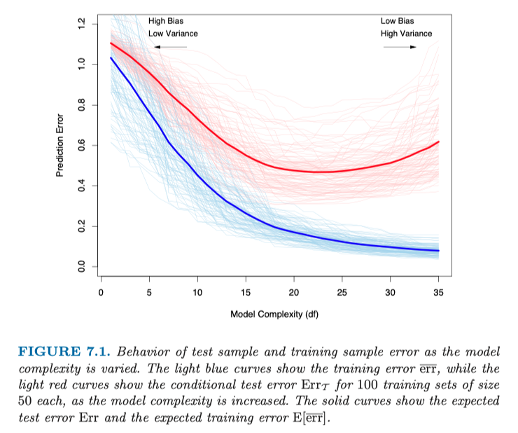
- Light Blue Curve: training error \overline{e r r}
- Solid blue curve: expected training error E[\overrightarrow{e r r}]
- Light red curve: conditional test error Err,
- Solid red curve: expected test error Err
Classification - A Review¶
- Estimate categorical response G \in\{1, \ldots, K\} from a vector of inputs X
- Typically model p_{k}(X)=\operatorname{Pr}(G=k \mid X) and define \hat{G}(X)=\operatorname{argmax}_{k} p_{k}(X)
Common choices of loss function
- 0-1 loss
- log-likelihood (deviance) 负对数似然
这里的 −2 × \operatorname{log-likelihood} 值有时也被称为 偏差 (deviance)．
Ulimate Goal¶
- \hat{f}_{\alpha}(x) typically has a tuning parameter \alpha controlling its complexity
- Estimate E\left[L\left(Y, \hat{f}_{\alpha}(X)\right)\right] for different values of \alpha
- Find the value of \alpha that produces the minimum expected prediction error
Two Separate Goals
- Model selection: Estimate the performance of different models in order to choose the best one
- Model assessment: Having chosen a final model, estimate its prediction error (generalization error) on new data.
For a Data-rich Situation
- Randomly divide the dataset into 3 parts: Train Validation Test
- Common split ratio 50 \%, 25 \%, 25 \%
- Model selection
- Use training set to fit each model
- Use validation set to estimate \operatorname{Err}_{T} for each model
- Choose model with lowest \operatorname{Err}_{T} estimate
- Model assessment
- Use the test set - unseen until this stage - to estimate E r r_{T}
For a Data-insufficient Situation
Approximate the validation step either
- analytically with approahces such as 分析的手段 (AIC，BIC，MDL，SRM) 1. Akaike Information Criterion 2. Bayesian Information Criterion 3. Minimum Description Length 4. Structural Risk Minimization
- with efficient sample re-use 有效的样本重利用（交叉验证和自助法） 1. cross-validation 2. the bootstrap
Each method also provides estimates of the Err or Err_T of the final chosen model
The Bias-Variance Decomposition¶
Assume an additive model
where E(\epsilon)=0 and \operatorname{Var}(\epsilon)=\sigma_{\epsilon}^{2}
The expected prediction error of \hat{f}(X) at X=x_{0}
can be expressed as
- Irreducible error: \sigma_{\epsilon}^{2}
- Bias: E\left[f\left(x_{0}\right)-E\left[\hat{f}\left(x_{0}\right)\right]\right]
- Variance: \operatorname{Var}\left[\hat{f}\left(x_{0}\right)\right]=E\left[\hat{f}\left(x_{0}\right)-E \hat{f}\left(x_{0}\right)\right]^{2}
第一项是目标在真实均值 f\left(x_{0}\right) 处的方差，无论我们对 f\left(x_{0}\right) 的估计有多好，这是不可避免的，除非 \sigma_{\varepsilon}^{2}=0. (因此, 我们只要关注 MSE 即可.) 第二项是偏差的平方，是我们估计的均值与真实的均值间的偏差量；最后一项是方差，是估计的 \hat{f}\left(x_{0}\right) 在其均值处的平方偏差的期 望值. 一般地，我们建立的模型 \hat{f} 越复杂， (平方) 偏差越低但是方差越大.
K-Nearest-Neighbor Regression Fit¶
Assuming x_{i} are fixed,
- Complexity of model is inversely related with k
- As k increases, the variance decreases
- As k increases, the squared bias increases
这里为了简单我们假设训练输入 x_i 为固定的，则随机性来自 y_i ．邻居的个数 k 与模型复杂度负相关．对于较小的 k ，估计出的 \hat{f}_k (x) 可以对潜在的函数 f(x) 可能有更好的适应性．当 k 增大，偏差 —— f(x_0) 与 k-最近邻中的 f(x) 平均值的差的平方—— 一般会增大，而方差会降低．
Linear Model - least square fit¶
Now assume a linear model
where \hat{\beta} is p-dimensional and fit by least squares, then
with h\left(x_{0}\right)=X\left(X^{\top} X\right)^{-1} x_{0} and \hat{f}_{p}\left(x_{0}\right)=x_{0}^{\top}\left(X^{\top} X\right)^{-1} X^{\top} y
注意到这里的方差随着 x_0 变化， 但是它的平均为 (p/N)\sigma_\epsilon^2.这是因为: 若记 \mathbf{X}=\left[x_{1}^{\prime}, x_{2}^{\prime}, \ldots, x_{N}^{\prime}\right]^{\prime}, 则
因此有
这称作 样本内 (in-sample) 误差. 这里模型复杂度直接与参数个数 p 有关.
Linear Model - Ridge Fit¶
Still assume a linear model
where \hat{\beta}_{\alpha} is p-dimensional and fit via ridge regression, then
with h_{\alpha}\left(x_{0}\right)=X\left(X^{\top} X+\alpha I\right)^{-1} x_{0} and \hat{f}_{p, \alpha}\left(x_{0}\right)=x_{0}^{\top}\left(X^{\top} X+\alpha I\right)^{-1} X^{\top} y Therefore, this regression fit model has a different bias and variance to the least square fit
Linear Model - Fine Decomposition of Bias¶
对于线性模型族比如岭回归，我们可以更精细地分解偏差．
Let \beta_{*} denote the parameters of the best-fitting linear approx to f :
Now re-write the averaged squared bias 偏差平方的平均
as
where
- First term: Ave[Model Bias] ^{2} 模型偏差
- Second term: Ave[Estimation Bias] ^{2} 估计偏差
Estimation bias is zero for least square estimate, and positive for ridge regression estimate. 对于通过普通最小二乘拟合的线性模型，估计量的偏差为 0．对于约束的拟合， 比如岭回归，它是正的，而且我们用减小方差的好处进行交易．模型偏差只可能通过将线性模型类扩大为更广的模型类才能降低，或者通过在模型中加入变量的交叉项以及变换项（通过变量的变换得到的）来降低．
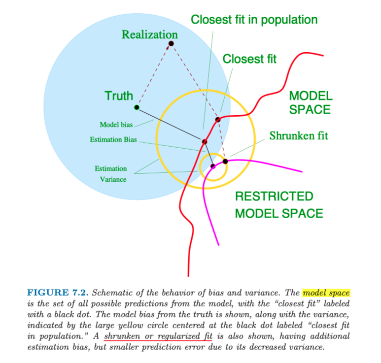
上图给了一个形象的例子, 展现了通过进行 shrink 或者 regularization, 虽然模型的偏差变大了, 如果方差减小更多也是值得的.
Example 1¶
Set-up
- n=80 observations and p=20 predictors
- X is uniformly distributed in [0,1]^{20} 在这样一个超立方体中均匀分布
- Use squared error loss to measure Err for the regression task
- Use 0-1 loss to measure Err for the classification task
下图中左边的设置: 数据分布如下, 分类和回归任务均采用 KNN
右边的设置: 分布如下, 对于分类和回归任务均采用 best subset linear regression of size p
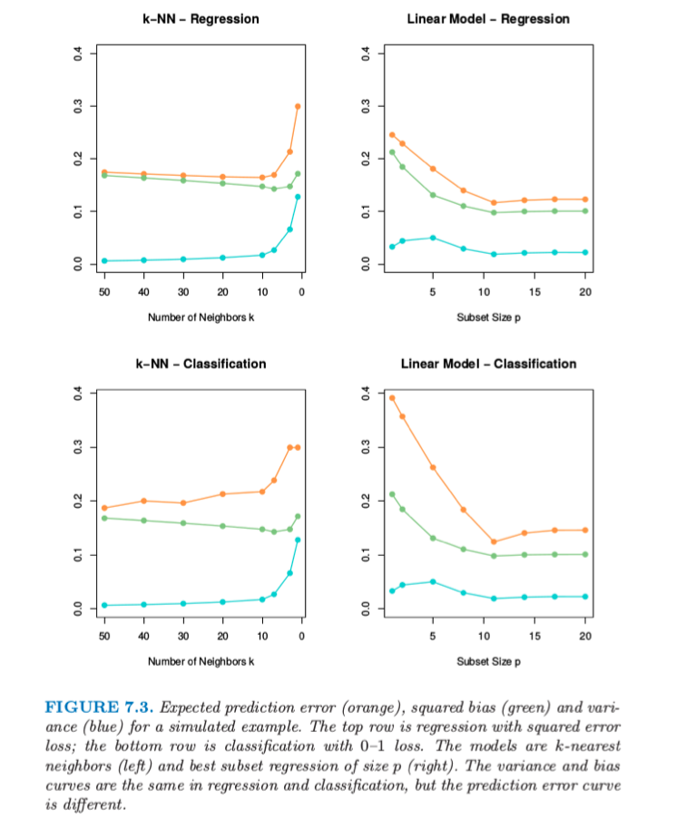
图中: 预测误差（红色）、平方误差（绿色）和方差（蓝色）.
在回归任务的(上面两张图), 预测误差是平方误差和方差之和; 但在分类任务(下面两张图)则不是, 这是因为分类的预测误差用的损失函数不一样. (比如给定一个点, 类别1的真实概率为0.9, 模型预测为0.6, 此时的偏差平方 (0.6-0.9)^2 较大, 但是预测误差为零). 总而言之, 「偏差方差间的权衡在 0-1 损失的表现与在平方误差损失的表现不一样」. 反过来意味着调整参数的最优选择可能在两种设定下本质上不同．正如后面章节中描述的那样，我们应该将调整参数的选择建立于对预测误差的估计之上．
Optimism of Training Error Rate¶
Optimism of \overline{\text { err }}¶
区分 训练误差 \overline{err} 和 泛化/预测误差 generalization/prediction error Err_{T}
Suppose \left(x_{0}, y_{0}\right) is a new test data point, drawn from the joint distribution of the data. 注意下面期望误差中, training set T 是固定的, X_{0}, Y_{0} new test data point.
Training error \overline{e r r}<<\operatorname{Err}_{T} as it uses T for both fitting and assessment.
这里的 \overline{e r r} 是训练误差, 泛化误差 \operatorname{Err}_{T} 可以看成是 样本外 (extra-sample) 误差 (因为测试输入向量不需要与训练输入向量一致). 下面定义样本内误差, 从而理解训练误差 \overline{e r r} 是乐观估计.
Define in-sample error as 定义样本内误差 [考虑到了噪声项]
where the expectation is over new responses y_{i}^{\prime} at each training point x_{i} 也即, 在每一个样本点 x_i 处, 都观测一系列新的响应变量, 求期望.
Define the optimism as
The average optimism
where
- the training input vectors are held fixed
- the expectation is over the training output values [因为有随机噪声的存在]
For squared error, 0-1, and other loss functions, one can show quite generally that
补充说明: Here the predictors in the training set are fixed, and the expectation is over the training set outcome values; hence we have used the notation \mathrm{E}_{\mathbf{y}} instead of \mathrm{E}_{\mathcal{T}}. We can usually estimate only the expected error \omega rather than op, in the same way that we can estimate the expected error Err rather than the conditional error \operatorname{Err}_{\mathcal{T}}.
对于这些概念的理解和公式证明参见 here 的习题. 总而言之, 训练误差仅和样本相关, 也即一个 x_i 其响应值是固定的; 然而对于同一个样本点, 由于噪声的存在其真实的响应值满足一个分布, 这里的样本内误差 Err_{in} 就是考虑了这一特点. 一般而言, 样本内误差会比训练误差更大. 而 average optimism 则是在此基础上, 考虑了训练样本的分布, 对于 y 的分布进行了求期望.
- The harder we fit the model, the stronger y_{i} and \hat{y}_{i} are associated, and the larger \omega
- Large \omega \rightarrow greater optimism of \overline{e r r}
通过对于 op 的分析, 可以对于方差-偏差的分解有更好的理解. 模型的复杂度越高, 样本点 y_{i} 和拟合值 \hat{y}_{i} 的相关性越高, 则 average optimism \omega 也越高.
In summary, we have the important relation
How to Estimate Prediction Error¶
Option 1 [估计样本内误差]
- Estimate the optimism and add it to \overline{e r r}
- C_{p}, A I C, B I C work in this way for a special class of estimates that are linear in their parameters
- Can use in-sample error for model selection but not a good estimate of Err
Option 2 [直接估计样本外误差]
- Use cross-validation or bootstrap as direct estimates of the extra-sample Err 本章后面描述的交叉验证以及自助法是对 样本外 (extra-sample) 误差 Err 直接估计的方法．这些一般工具可以用于任意损失函数以及非线性自适应拟合技巧．
样本内误差通常不是直接感兴趣的，因为特征的未来值不可能与它们训练集值一 致．但是为了模型之间的比较，样本内误差是很方便的，并且经常能够有效地进行模型选择．原因在于误差的相对（而不是绝对）大小是我们所关心的．
Estimates of Err_{in}¶
Err_{in} Estimate: C_{p} Statistic¶
If \hat{y}_{i} is obtained by a linear fit with d inputs, then
for the additive error model Y=f(X)+\epsilon
So (holds approximately when N \rightarrow \infty )
Adapting this expression leads to the C_{p} statistic
where \hat{\sigma}_{\epsilon}^{2} is an estimate of the noise variance
Akaike Information Criterion¶
where \log l i k=\sum_{i=1}^{n} \log P_{\hat{\theta}}\left(y_{i}\right), and \hat{\theta} is the MLE of \theta
- -\frac{2}{n} \log l i k rewards the fit between model and the data
- 2 \frac{d}{n} is the penalty for including extra predictors in the model
AIC can be seen as an estimate of E r r_{i n} in this case with a log-likelihood loss
另外, 在 随机项正态性假设下, 可知基于 RSS 的估计和 AIC 等价, 参见 wiki. 即有形式 AIC = 2k + n \log(RSS)
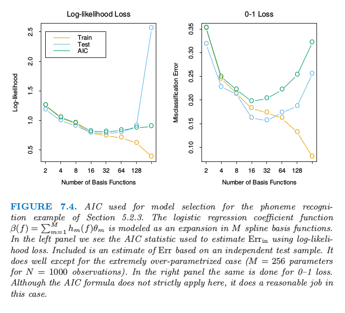
注意,
对于含有加性误差的线性模型在平方误差损失下是精确成立的，在对数似然损失下是近似成立的．特别地，这个法则一般地对于 0-1 损失是不成立的.
Effective # of Paramaters¶
For regularized fitting need to generalize the concept of number of parameters, why?
Consider regularized linear fitting - ridge, smoothing splines
where
- y=\left(y_{1}, y_{2}, \ldots, y_{n}\right) is the vector of training outputs
- \hat{y}=\left(\hat{y}_{1}, \ldots, \hat{y}_{n}\right) is the vector of predictions
- S is an n \times n matrix, which depends on x_{1}, \ldots, x_{n} but not y_{1}, \ldots, y_{n}
Define the effective number of parameters as 有效参数个数, 也被称作 有效自由度 (effective degrees-of-freedom)
- If S is an orthogonal-projection matrix onto a basis set spanned by M features, then \operatorname{trace}(S)=M
- \operatorname{tr}(S) - the correct quantity to replace d as the number of parameters in the C_{p} statistic. 在 C_{p} 统计量中的 d 应该是这里所定义的「有效自由度」
- If y arises from an additive error model Y=f(X)+\epsilon with \operatorname{Var}(\epsilon)=\sigma_{\epsilon}^{2}, then [上面有效自由度的定义基于线性变换的矩阵, 而在加性随机项假设下, 可以得到更一般性的定义] 证明 see here
So the more general definitin of dof is
Bayesian Approach & BIC¶
Generic Form of BIC
Bayesian Information Criterion (BIC)
- BIC statistic \left(\times \frac{1}{2}\right) is also known as the Schwarz criterion (SBC)
Under Gaussian model with known variance \sigma_{\epsilon}^{2}, for squared error loss
As a result, BIC can be re-written as
- BIC is proportional to AIC, with factor 2 replaced by \log N [因此可知当 N>e^2=7.4 时, BIC 对于模型参数的惩罚更大]
Derivation of BIC¶
Starting point:
- \left\{M_{1}, \ldots, M_{m}\right\}, a set of candidate models and their corresponding parameters \theta_{1}, \ldots, \theta_{m}
Goal:
- Choose the best model M_{i}
How
- Training data Z=\left\{\left(x_{1}, y_{1}\right), \ldots,\left(x_{n}, y_{n}\right)\right\}
- Priors p\left(\theta_{m} \mid M_{m}\right)
- Derive the Posterior of model M_{m}
In comparision of two models M_{m} and M_{1} 为了比较两个模型, 构造 后验 odds (选择概率较大的模型)
- Posterior odds = prior odds * \operatorname{BF}(Z)
- B F(Z)=\frac{\operatorname{Pr}\left(Z \mid M_{m}\right)}{\operatorname{Pr}\left(Z \mid M_{l}\right)} is called Bayes factor 贝叶斯因子
- Indicates the contribution of the data toward the posterior odds 数据对于后验 odds 的贡献
The posterior of model M_{m} is
- Usually assume uniform prior P\left(M_{m}\right)=1 / M
- Approximate \int p\left(Z \mid \theta_{m}, M_{m}\right) p\left(\theta_{m} \mid M_{m}\right) d \theta_{m} by simplification and Laplace approximation
- where \hat{\theta}_{m} is MLE and d_{m} is # of free parameters in M_{m}
If we define the loss function as -2 \log \operatorname{Pr}\left(Z \mid \hat{\theta}_{m}, M_{m}\right), then it’s equivalent to BIC
AIC vs BIC¶
If M_{\text {true }} \in\left\{M_{1}, \ldots, M_{M}\right\} then as N \rightarrow \infty
- BIC will select M_{\text {true }} with probability 1
- AIC will not, tends to choose models which are too complex
However, when N is small
- BIC often choose models which are too simple
In addition, for BIC
- \frac{e^{-\frac{1}{2} B I C_{m}}}{\sum_{l=1}^{M} e^{-\frac{1}{2} B I C_{l}}} [对 M 个元素的模型集合进行计算 BIC 准则, 可以得到每个模型的后验概率即为此]
- Estimate not only the best model, but also their relative merits
Cross Validation¶
K-Fold Cross Validation¶
General Approach
- Split the data into \mathrm{K} roughly equal-size parts
- For the k_{t h} part, calculate the prediction error of the model fit using the other K-1 parts
- Do this for k=1,2, \ldots, K and combine the \mathrm{K} estimates of the prediction error
When and Why
- It is applied when labelled training data is relatively sparse 适合训练数据较少的情况
- This method directly estimates \operatorname{Err}=E[L(Y, \hat{f}(X))] 直接估计了样本外误差
具体而言
- The mapping \kappa: 1, \ldots, n \rightarrow 1, \ldots, K indicates observation i belongs to partition \kappa(i)
- \hat{f}^{-k}(x) is the function fitted with the k_{t h} part of the data removed
- Cross-validation estimate the prediction error
- Typical choices for \mathrm{K} are 5 or 10
- The case K=n is shown as leave-one-out cross-validation 留一法 (LOOCV)
这样的话, 我么利用了训练数据对于泛化误差有了一个估计. 那么如何利用 CV 来进行模型选择? 我们直接选择在 CV 的估计中泛化误差最小的那个模型.
Candidate models f(x, \alpha) indexed by a parameter \alpha \hat{f}^{-k}(x, \alpha) is the \alpha_{t h} model fit with k_{t h} part of the data removed. The define
Choose the model
What Does Cross Validation Estimate¶
Intuition says
- When \mathrm{K}=5 or 10, C V(\hat{f}) \approx \operatorname{Err} as training sets for each fold are fairly different
- When \mathrm{K}=\mathrm{n}, C V(\hat{f}) \approx \operatorname{Err}_{T} as training sets for each fold are almost identical
However, according to theory and simulation experiments
- Cross validation really only effectively estimates Err [参见 7.12 节]
What Values of \mathrm{K}¶
When \mathrm{K}=\mathrm{n}
- C V(\hat{f}) is approximately an unbiased estimate of \operatorname{Err}
- C V(\hat{f}) has high variance as the \mathrm{n} training sets are similar
- Computational burden high (except for a few exceptions)
When \mathrm{K}=5 (lowish)
- C V(\hat{f}) has low variance
- C V(\hat{f}) is potentially an upward biased estimate of \operatorname{Err} 偏差较大
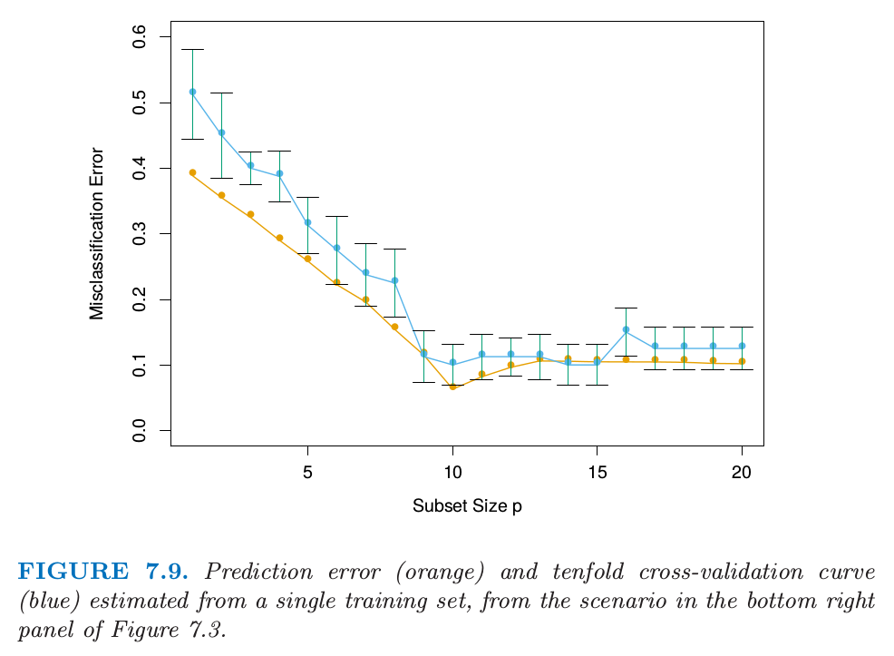
Cross Validation - Right \& Wrong¶
Task: classification problem with a large number of predictors
- N=50 samples in two equal-sized classes
- p=5000 quantitative predictors (standard Gaussian) independent of class labels
- True test error rate of any classifier 50 \%
Strategy 1
- Screen the predictors: Find a subset of good predictors that are correlated with the class labels
- Build a classifier: based on the subset of good predictors
- Perform cross-validation: estimate the unknown tuning parameters and Err of the final model
Strategy 2
- Divide the samples into \mathrm{K} groups randomly
- For each fold k=1, \ldots, K - Find a subset of good predictors using all the samples minus the k_{t h} fold - Build a classifier using all the samples minus the k_{t h} fold - Use the classifier to predict the labels for the samples in the k_{t h} fold
- The error estimates from step 2 are then accumulated over all K folds to produce the cross-validation estimate of prediction error
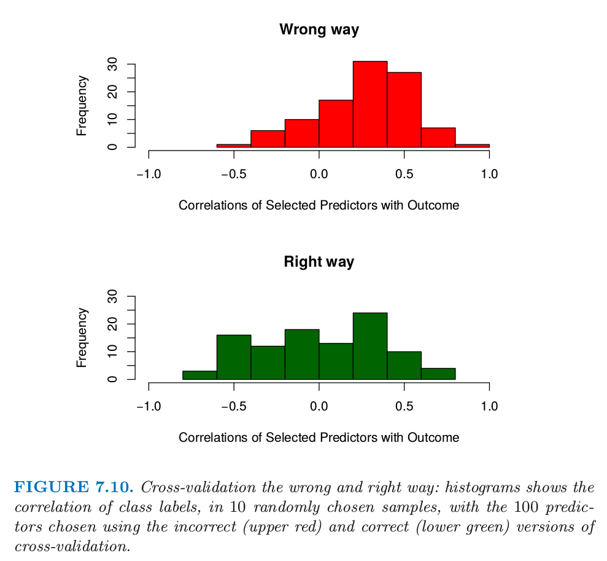
一般地，在多步建模过程中，交叉验证必须应用到整个模型步骤的序列中．特别地，“丢弃”样本必须在任何选择或者过滤之前．有一个条件：初始非监督筛选步骤可以在丢弃样本之前完成．举个例子，开始交叉验证前，我们可以选择 1000 个在 50 个样本上有着最大方差的预测变量．因为这个过滤不涉及到类别，所以它不会给预测变量不公平的好处．
Bootstrap Method¶
The Bootstrap Given a training set X=\left(z_{1}, z_{2}, \ldots, z_{n}\right) with each z_{i}=\left(x_{i}, y_{i}\right)
The bootstrap idea is For b=1,2, \ldots, B
- Randomly draw n samples with replacement from Z to get Z^{*b} that is
- Refit the model using Z^{*b} to get S\left(Z^{* b}\right)
Examine the behavior of the B fits
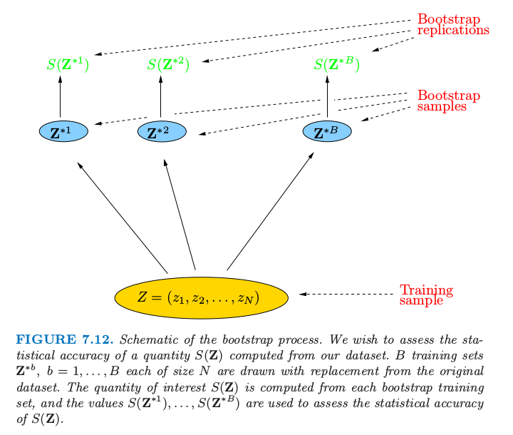
Can Estimate Any Aspect of the Distribution of S(Z)
For example its variance
where
Attempt 1¶
$$ \hat{E r r r}{b o o t}=\frac{1}{B} \frac{1}{n} \sum\right)\right) $$ where }^{B} \sum_{i=1}^{n} L\left(y_{i}, \hat{f}^{*b}\left(x_{i\hat{f}^{*b}\left(x_{i}\right) is the predicted value at x_{i} using the model computed from Z^{* b}
- Is this a good estimate or not? Why
- Overlap between the training and testing sets
- How could we do better?
- Mimic cross validation
这种方式中, 事实上二层的损失函数算的是样本内误差, 因此会低估预测误差.
Attempt 2: leave-one-out bootstrap¶
因此, 这里的想法是使得训练和测试集分离.
$$ \hat{E r r}^{(1)}=\frac{1}{n} \sum_{i=1}^{n} \frac{1}{\left|C^{-i}\right|} \sum_{b \in C^{-i}} L\left(y_{i}, \hat{f}^{* b}\left(x_{i}\right)\right) $$ where C^{-i} is the set of bootstrap samples b not containing observation i
- Either make B large enough so \left|C^{-i}\right|>0 for all i or
- Omit observation i from testing if \left|C^{-i}\right|=0
Pros
- avoids the overfitting problems of \bar{Err}_{boot}
Cons
- Has the training-set-size bias of corss-validation 会有在讨论交叉验证中提到的 训练集大小偏差 (training-set-size) 问题
- Probability that observation i in bootstrap sample Z^{*b}
- Therefore the average number of distinct observations in Z^{* b} is 0.632 n
- \overline{E r r}^{(1)} bias similar to two fold cross validation (usually upward) 向上的偏差
Attempt 3: The .632 estimator To Alleviate Bias¶
- Compromise between the training error \overline{e r r} and the leave-one-out bootstrap estimate
- Derivation not easy
- The constant .632 relates to P\left(i \in Z^{* b}\right)
However, .632 estimator does not do well if predictor overfits
Estimate the Degree of Overfitting¶
No-information error rate 无信息误差率
- Estimate of the error rate of \hat{f} if inputs and outputs were independent 输入变量与类别标签独立时的预测规则的误差率
- Note the prediction rule \hat{f}, is evaluated on all possible combinations of targets y_{i} and predictors x_{j}
Relative overfitting rate 相对过拟合率
- 0 \leqslant \hat{R} \leqslant 1
- \hat{R}=0 \rightarrow no overfitting
- \hat{R}=1 \rightarrow overfitting or no-information value \hat{\gamma}-\overline{e r r}
Attempt 4: The .632+ estimator¶
with
- .632 \leqslant \hat{\omega} \leqslant 1 as \hat{R} ranges from 0 to 1
- \hat{E r r}^{(.632+)} ranges from \hat{E r r}^{(.632)} to \hat{E r r}^{(1)} 大致来讲，它得到舍一自助法和训练误差率之间的权衡，权衡依赖于模型过拟合的程度
- \hat{E r r}^{(.632+)} is a compromise between \hat{E r r}^{(.632)} and \overline{e r r} that depends on the amount of overfitting
- Again, the derivation is non-trivial
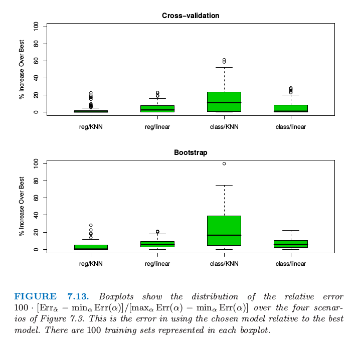
10-Fold Cross Validation \& .632+ Bootstrap
In the above cases
- AlC, cross validation or bootstrap yields a model fairly close to the best available
- AIC (BIC) overestimate Err by 38 \%, 37 \%, 51 \%, and 30 \%
- Cross validation (bootstrap) overestimate Err by 1 \%, 4 \%, 0 \%, and 4 \%
However, for many adaptive, nonlinear techniques (like trees), estimation of the effective number of parameters is very difficult, making AIC impractical.